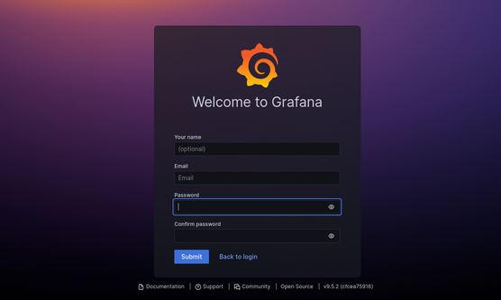
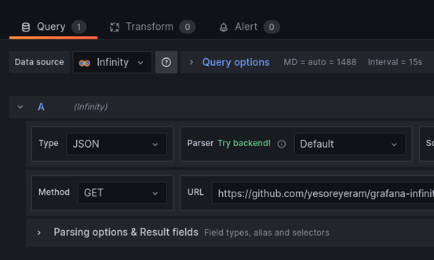
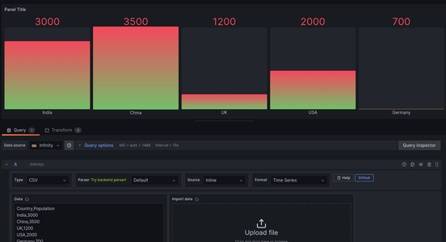

Alta Data
¡Bienvenidx a Alta Data! Explorá el fascinante mundo de la ciencia de datos con datasets abiertos. Conocé nuestro análisis del COVID-19 entre 2020 y 2023 en CABA o probá nuestra instancia interactiva de Grafana. Descubrí ideas, revelá tendencias y aprovechá todo el potencial de los datos con tan solo un clic.
~ ~ ~
Creá tu propio Dashboard
Utilizá nuestra instancia de Grafana para crear tu propio Dashboard con el dataset que más te guste. Para que puedas hacerlo te dejamos alguna info importante.
Conocé lo básico sobre Grafana:
1. Ingresá a tu cuenta
Creá una nueva cuenta o iniciá sesión si ya tenés un usuario. Podés hacerlo desde este enlace.
2. Creá un nuevo Dashboard
Podés crear un nuevo Dashboard o editar alguno de los que están dentro de la carpeta "users". En 'data source' elegí 'Infinity' que es el plugin que vamos a usar.
3. Elegí un dataset y generá tu gráfico
Usá un dataset desde una URL o pegando el contenido de la fuenta (puede ser csv, json y más). Podés agregar columnas de ser necesario y cambiar el tipo de visualización.
~ ~ ~
Podés ver algunos ejemplos de cómo utilizar Infinity en el siguiente link. ¡Que te diviertas!